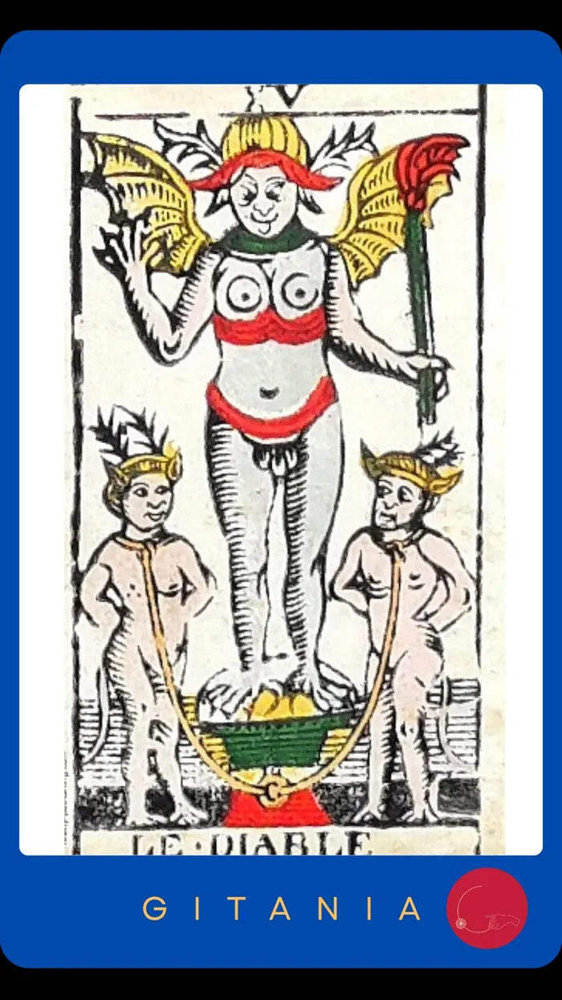

Jung y los arquetipos
Jung y el tarot: lo que de verdad dijo sobre las cartas
Carl Jung nunca escribió un libro sobre el tarot, pero sí habló de él. Estas son sus palabras, con fecha y fuente, y lo que nos dicen hoy sobre leer imágenes para mirarnos por dentro.

Basta con hojear libros, cursos o redes sobre tarot para encontrar el nombre de Carl Gustav Jung (1875-1961), el psiquiatra suizo que dio forma a la idea de los arquetipos y del inconsciente colectivo. A veces se le presenta casi como el padrino del tarot moderno. La realidad es más modesta y, justo por eso, más interesante: Jung habló de las cartas en pocas ocasiones, con mucho cuidado en sus palabras, y nunca les dedicó un libro ni un capítulo. Aquí reunimos lo que está documentado.
Si leíste nuestra entrada sobre el origen del tarot como juego de cartas en la Italia del siglo XV, ya conoces el punto de partida histórico. Hoy damos un salto al siglo XX, a Zúrich.
1930: una carta breve y dos errores de historia
El 16 de septiembre de 1930, Jung respondió a una señora Eckstein que le había preguntado por el tarot. Le dijo que sí lo conocía y que, hasta donde él sabía, era la baraja que usaban originalmente los gitanos españoles, las cartas más antiguas que se conocían. La investigadora del tarot Mary K. Greer, que recoge esta carta, lo aclara sin rodeos: la investigación histórica actual no respalda que los gitanos usaran las cartas en su origen, y el tarot tampoco es la baraja más antigua. Las cartas de juego comunes lo precedieron entre 50 y 75 años, y el tarot apareció en el norte de Italia hacia 1440.
Conviene empezar por aquí porque marca el tono: Jung era un gran lector de símbolos, no un historiador de las cartas. La propia Greer lo dice sin rodeos: su conocimiento del tarot, sobre todo de su historia, era muy limitado.
1933: «símbolos con los que se juega»
La reflexión más completa de Jung sobre el tarot no está en un libro que él escribiera, sino en un seminario. Entre 1930 y 1934 dio en Zúrich un ciclo dedicado a las visiones de Christiana Morgan, a quien había enseñado la técnica de la imaginación activa. Las notas de esas sesiones se publicaron en 1997 en la Princeton University Press, en dos volúmenes editados por Claire Douglas. El 1 de marzo de 1933, mientras buscaba la figura del hermafrodita en distintas tradiciones, Jung se detuvo en el tarot:
«Son imágenes psicológicas, símbolos con los que se juega, así como el inconsciente parece jugar con sus contenidos».C. G. Jung, seminario del 1 de marzo de 1933, en Visions, vol. 2, p. 923 (traducción propia)
Luego describió las cartas con figuras, como el sol, el hombre colgado de los pies, la torre alcanzada por el rayo o la rueda de la fortuna, y dijo que eran «una especie de ideas arquetípicas». Por eso, añadió, el tarot se presta a un «método intuitivo» que busca comprender el fluir de la vida y que, en cualquier caso, permite leer «las condiciones del momento presente». Lo comparó con el I Ching, el antiguo oráculo chino.
Vale la pena leer la frase completa con honestidad. Jung no descarta la idea de anticipar acontecimientos, pero la deja en un «posiblemente». Lo que afirma con más seguridad es otra cosa: que las cartas ayudan a leer el presente. Y el verbo que elige es «jugar». No dice que las cartas guarden un saber secreto; dice que con ellas se juega, como juega el inconsciente con sus imágenes.
En el mismo pasaje comentó una carta en particular, la de nuestra imagen: El Diablo. En el Tarot de Marsella esa figura tiene rasgos femeninos y masculinos a la vez, y Jung vio en ella la unión de los opuestos, que en la alquimia correspondería al oro. Añadió que, para la mentalidad cristiana, un intento así de unir los opuestos parecía algo diabólico, prohibido. Es una lectura simbólica fascinante, y también un buen ejemplo de su método: Jung no explicaba la carta por su historia, sino por las imágenes con las que dialogaba.
El mismo seminario muestra otra vez sus despistes históricos: ahí dijo que el tarot era el origen de la baraja común, cuando, como vimos, fue al revés. La riqueza de la página está en su mirada sobre las imágenes, no en sus datos.
La única frase publicada: «lejanamente descendientes»
En la edición de referencia de sus obras completas, los Collected Works, el tarot aparece en una sola frase, en el ensayo «Archetypes of the Collective Unconscious» (volumen 9, parte 1, párrafo 81). Jung acababa de decir que las series de imágenes de la alquimia sirven para hacerse una idea del proceso simbólico, y añadió:
«También parece como si el conjunto de imágenes de las cartas del tarot descendiera lejanamente de los arquetipos de la transformación, una opinión que me confirmó una conferencia muy esclarecedora del profesor Bernoulli».C. G. Jung, Collected Works, vol. 9/I, § 81 (traducción propia)
Fíjate en la prudencia: «parece», «lejanamente», y el mérito de la idea atribuido a otro, el profesor Rudolf Bernoulli. Jung no dice que los 22 arcanos mayores sean «los arquetipos». Para él, un arquetipo no es un dibujo concreto, sino una forma de fondo que se expresa en imágenes muy distintas según cada época y cada cultura. Una carta pintada en Marsella sería, como mucho, una descendiente lejana de esas formas. En el mismo párrafo explica que el proceso simbólico es una experiencia en imágenes y de imágenes, con un ritmo de opuestos: lo negativo y lo positivo, la pérdida y la ganancia, la oscuridad y la luz.
El experimento que se quedó a medias
Hacia el final de su vida, Jung quiso estudiar estos «métodos intuitivos» de forma más sistemática. Según la biografía de Deirdre Bair (Jung: A Biography, 2003), en 1950 encargó a cuatro miembros de su Club Psicológico que exploraran uno de estos métodos cada uno. A Hanni Binder le tocó investigar el tarot y enseñarle a leer las cartas, y el grupo eligió el Ancien Tarot de Marseille de la casa Grimaud. Greer anota que el trabajo de Binder dio muy poco, y el grupo se disolvió hacia 1954.
El 9 de febrero de 1960, poco más de un año antes de morir, Jung escribió a A. D. Cornell que en el Instituto C. G. Jung de Zúrich habían empezado experimentos con los métodos intuitivos, que él llamaba sincronísticos, conocidos históricamente: astrología, geomancia, cartas del tarot y el I Ching. «Pero teníamos muy pocos colaboradores y muy pocos medios, así que no pudimos seguir y tuvimos que parar» (traducción propia). Es decir: no hubo conclusiones. Jung dejó preguntas abiertas, no pruebas.
Del seminario a los libros de tarot
Donde Jung dejó una frase, otros escribieron libros. Uno de los más influyentes es Jung and Tarot: An Archetypal Journey, de Sallie Nichols (1980), que recorre los 22 arcanos mayores como un viaje arquetípico. Esa lectura del tarot como mapa de imágenes interiores viene de quienes desarrollaron las ideas de Jung, más que del propio Jung. No le quita valor; solo ayuda a saber de quién es cada idea.
Qué podemos tomar hoy de todo esto
Separar lo que Jung dijo de lo que se le atribuye no empobrece al tarot. Al contrario: deja a la vista una propuesta preciosa y muy sencilla. Las cartas como imágenes con las que se juega, para leer el momento presente.
Puedes probarlo con la carta de hoy. Mira El Diablo un rato, sin buscar su «significado» en un libro, y pregúntate: ¿qué opuestos estoy intentando unir en mi vida? ¿Qué parte de mí juzgo como prohibida y quizá solo pide ser mirada? No hay respuesta correcta. Lo que aparece en ti al mirar la imagen ya es la lectura.
Fuentes
- Jung, C. G. Visions: Notes of the Seminar Given in 1930-1934. Ed. Claire Douglas. 2 vols. Princeton: Princeton University Press (Bollingen Series XCIX), 1997. Vol. 2, p. 923. press.princeton.edu
- Jung, C. G. The Archetypes and the Collective Unconscious. Collected Works, vol. 9, parte 1, § 81. Trad. R. F. C. Hull. Princeton: Princeton University Press, 1969. press.princeton.edu
- Greer, Mary K. «Carl Jung and Tarot». Mary K. Greer's Tarot Blog, 31 de marzo de 2008 (recoge las cartas de Jung de 1930 y 1960, el seminario de 1933 y los datos de la biografía de Deirdre Bair). marykgreer.com
- Nichols, Sallie. Jung and Tarot: An Archetypal Journey. Nueva York: Samuel Weiser, 1980. Ficha: Open Library
Las citas de Jung provienen de las ediciones en inglés de Princeton University Press; las traducciones al español son nuestras.